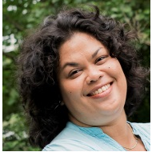

Interprofessioneel opleiden in de ouderengeneeskunde (IPO)

Anna van Daalen, coördinator onderwijs basismodule SOOL Tamara Wanner, coördinator onderwijs verdiepingsfase SOOL, Annemarie Moll-Jongerius, adjunct-hoofd SOOL
Als SOOL zetten we ons in om elk jaar het onderwijs voor aios te verbeteren, te innoveren en zo goed mogelijk te laten aansluiten op de dagelijkse praktijk. We bieden hierdoor een gevarieerd en leerzaam programma waarmee we aios willen opleiden tot goede specialisten ouderengeneeskunde. Niet alleen is er een groeiende behoefte aan specialisten ouderengeneeskunde, ook steeds meer basisartsen zijn geïnteresseerd in de opleiding. Dit resulteerde het afgelopen jaar in het groeien van de opleiding. Een groeiende organisatie vraagt om nieuwe werkwijzen en geeft uitdagingen voor de organisatie van het onderwijs.
Maken, geven en organiseren van onderwijs is een dynamisch proces waarbij onze docenten, onderwijscoördinatoren en onderwijskundige nauw samenwerken. De praktijk van de ouderengeneeskunde is continue aan veranderingen onderhevig. Onze docenten, die tevens in de praktijk werken, verweven deze ontwikkelingen in het onderwijs dat zij geven. Daarnaast wordt er vanuit de lokale curriculum commissie, waarin onder andere aios, jonge klaren, opleiders en een patiëntvertegenwoordiger plaatshebben, advies gegeven aan de onderwijs coördinatoren. Landelijk neemt elk onderwijsinstituut deel aan de landelijke curriculum commissie van waaruit het onderwijs tussen de verschillende instituten op elkaar wordt afgestemd en er geleerd wordt van elkaar. Viermaal per jaar komen we als staf van SOOL bij elkaar voor teambinding en didactische scholing. Het merendeel van onze docenten heeft daarnaast ook de Landelijk Educatie Docenten (LED) gevolgd. Tevens krijgt interprofessioneel opleiden steeds meer vorm zodat we de verbinding en samenwerking met andere specialismen kunnen versterken. Door al deze mogelijkheden bouwen we met elkaar aan kwalitatief goed onderwijs.
In het afgelopen jaar hebben we door de Corona pandemie een lange periode alleen online onderwijs kunnen geven aan onze aios. Hierdoor hebben we veel ervaring opgedaan met de vele online mogelijkheden die er zijn en is dit een vast onderdeel geworden tijdens de terugkomdagen. Naast de positieve kanten ervaarden we ook dat online contact, over een wat langere periode, nadelige gevolgen had. Tijdens de terugkomdagen staan het delen van ervaringen en leren van elkaar centraal. De verbinding met elkaar is belangrijk voor het welbevinden van aios. Gedurende de periode van het online werken bleek dat het delen van ervaringen lastiger werd en viel de verbinding voor een groot deel weg. Om deze redenen vinden we het als SOOL belangrijk om het overgrote deel van de terugkomdagen fysiek te blijven organiseren. Waar het online onderwijs geven voordelen biedt, hebben we dit behouden.
De aios evaluaties van het onderwijs waren in 2021 positief, zowel wat betreft de inhoud als de didactische vaardigheden. Dit houden we vast in het nieuwe jaar en hopen dat aios ook in 2022 veel zullen leren voor hun ontwikkeling als specialist ouderengeneeskunde.
Interprofessioneel opleiden in de ouderengeneeskunde (IPO)
Paula Broersen, onderwijskundige SOOL dr. Tony Poot, huisarts, PHEG
Het afgelopen jaar is er planmatig doorgewerkt aan het optimaliseren en borgen van interprofessionele opleidingsinitiatieven vanuit SOOL.
Waarschijnlijk is de meest bemoedigende constatering dat, naast het planmatig werken aan dit dossier, het thema zodanig is gaan leven dat het bijna ondoenlijk is geworden om alle voorbeelden van interprofessionele samenwerking in de opleiding, die spontaan ontstaan zijn, te benoemen en te volgen.
Afgelopen jaar sloten we het IPO jaarbericht af met de zin, ‘Steeds is duidelijk dat hoewel interprofessioneel werken en opleiden breed gedragen idealen zijn er ook een te overwinnen belangenconflict bestaat tussen discipline specifieke en interprofessionele leerdoelen en activiteiten binnen de beperkende context van alle opleidingen.’ Hoewel dit mechanisme nog merkbaar is en logischerwijze bestaat concluderen we dat het interprofessionele denken zijn eigen plaats verworven heeft.
Naast deze zeer positieve constatering is er nog altijd werk aan de winkel om interprofessionaliteit in de opleiding vorm te geven en te borgen. Een voorbeeld dat dit lukt is dat de online transitie cursus ouderengeneeskunde weer een aantal keren doorlopen is door gemengde groepen AIOS SO, HA, AVG en interne en aan de hand van de evaluaties steeds verder verbeterd wordt. Deze blended leeractiviteit, met deels online en fysieke bijeenkomsten, krijgt steeds meer een vaste plek binnen de verschillende opleidingen.
Het ingebed en ‘normaal’ worden van interprofessionele opleidingsinitiatieven wordt sterk geholpen door het feit dat de huisartsopleiding en SOOL de handen ineen geslagen hebben om gezamenlijk IPO onderwijs uit te gaan rollen. Een vervolgstap is dat er door gebouwd kan worden naar alle andere opleidingen die professionals leveren die van belang zijn voor ouderen met complexe hulpvragen.
We sluiten dan ook dit jaarbericht af met de constatering dat interprofessioneel samenwerken in de ouderengeneeskunde een waardevol doel is en dat het vertalen hiervan naar de opleidingen een inspirerende uitdaging is die we in Leiden met plezier op blijven pakken.
Herziening communicatielijn: de specialist ouderengeneeskunde
versterken in al haar rollen
Paula Broersen, onderwijskundige SOOL
Annemarie Moll, adjunct hood SOOL
COVID en online terugkomdagen, een uitdaging waar we het afgelopen jaar ontzettend veel van hebben geleerd! Net zoals bij alle andere opleidingen in Nederland zijn we bij SOOL sinds maart 2020 volledig overgestapt op online onderwijs. Dit is een grote klus geweest, want online onderwijs geven is totaal anders dan face to face. Online onderwijs vraagt van docenten en mentoren dat ze digitale vaardigheden goed beheersen en op een andere manier contact hebben met de aios. De stafleden van SOOL zijn dit avontuur met enthousiasme en veel creativiteit aangegaan en hebben het zich in korte tijd eigen gemaakt. De eerste maanden kwamen we allerlei uitdagingen tegen van instabiel internet, niet voldoende werkende online klaslokalen, veilige verbindingen tot online borrels en online koffiemomenten. Inmiddels is iedereen redelijk gewend aan het online werken en zijn bepaalde aspecten zelfs normaal geworden.
Terugkijkend heeft COVID gemaakt dat we online ontwikkelingen in korte tijd hebben leren kennen en zijn gaan waarderen. De vraag naar face to face contact en ontmoetingen blijft echter onverminderd groot en noodzakelijk. Het fysieke sociale contact, wandelgang gesprekken en informele koffie en lunch momenten zijn van grote toegevoegde waarde gebleken. We hopen het face to face onderwijs in de loop van 2021 weer te kunnen opstarten en werken toe naar een combinatie van face to face en online momenten waarbij we het mooie van beide mogelijkheden zullen verweven. Onze complimenten aan onze docenten, mentoren, aios en overige stafleden van SOOL, zij hebben allemaal ontzettend hard gewerkt en de voortzetting van de opleiding mogelijk gemaakt!
Opleiden ten tijde van Corona
Anneke van Strien van Merkestein, opleider, specialist ouderengeneeskunde, Safier, Den Haag
Mijn naam is Anneke van Strien-van Merkestein. Sinds 2014 werkzaam bij de organisatie Saffier in Den Haag als SO en als kaderarts GRZ. Sinds 2019 opleider bij SOOL. En zij hebben aan mij gevraagd om iets te vertellen over mijn ervaringen als opleider. En als het dan gaat over het jaar 2020 dan ontkom je er gewoon niet aan om vooral iets te vertellen over de zaken die door de Corona epidemie zijn veranderd. Maar gelukkig zijn er ook zaken die wel gelijk zijn gebleven.
Gelijk gebleven
Wat gelijk is gebleven is het plezier dat ik aan opleiden beleef. Het is een voorrecht om (meestal) jonge en gemotiveerde collega’s te begeleiden in hun leerproces. En om te zien hoe zij kunnen groeien als persoon en in hun deskundigheid en ervaring. En het is ook leuk om je eigen positieve maar ook negatieve ervaringen met het specialisme ouderengeneeskunde te kunnen delen. En ze soms wat tips en tricks te kunnen geven betreffende bepaalde ziektebeelden en omgang met familie..
Wat was anders
Een belangrijke verandering was dat samen met de AIOS een patiënt zien niet altijd mogelijk was. Zeker op een afdeling met een uitbraak van Corona kozen we ervoor om maximaal 1 vaste medische hulpverlener de beoordeling te laten doen. Daarna deden we dan de nabespreking Face to Face op gepaste afstand of digitaal via bv Teams. En ja dat is een andere manier van communiceren.
Effecten Corona maatregelen
Het omgaan met de effecten van algemene Corona maatregelen en verpleeghuis specifieke maatregelen zoals het bezoekverbod in de verpleeghuizen, het gebruik van mondkapjes en het meer digitaal werken (som zelfs vanuit huis) was ook een belangrijk gesprekpunt tijdens de leergesprekken. Wat mij daarin opviel was dat zowel de AIOS als ikzelf ervaarden dat we het vooral lastig vonden dat direct contact d.m.v. een hand op een schouder of een aai over de wang niet mogelijk was. De leergesprekken werden soms digitaal gevoerd. Dit probeerden we tot een minimum te beperken maar soms was dat de beste keus om reisbewegingen tussen locaties te beperken.
Conclusie
Kortom opleiden ten tijde van Corona, het is anders maar nog steeds een heel boeiend onderdeel van ons vak als specialist ouderengeneeskunde.
Selectieprocedure 2020
Gerda Dijkstra, kaderhuisarts supervisie en coaching, opleidingscoördinator SOOL (tot 2-21)
De opleiding tot specialist ouderengeneeskunde heeft in Leiden in 2020 twee instroomdata: 1 maart 2020 en 1 september 2020.
De Selectieprocedure instroomdatum 1 maart 2020
Het totaal aantal aanmeldingen was 13
2 kandidaten zijn op basis van de briefselectie afgewezen.
11 kandidaten zijn uitgenodigd voor selectiegesprekken
1 kandidaat heeft zich afgemeld, deze kandidaat wil voor een volgende ronde opnieuw solliciteren.
Aangenomen kandidaten:
Op grond van de adviezen van de selectiecommissies zijn in totaal 9 kandidaten aangenomen. één van deze kandidaten is uitgenodigd voor een tweede gesprek. Deze kandidaat is aangenomen. Dit besluit is ondersteund door gesprekken met de referent.
Afgewezen kandidaat:
1 kandidaat is afgewezen op grond van lage scores op items 'oriëntatie/inzicht in het vakgebied','probleemanalyse' ,'info overbrengen' en 'lerende oriëntatie'.
Groepsgrootte maartgroep 2020
De maartgroep 2020 start met 9 aios:
2 kandidaten uit de selectieprocedure voor de septembergroep 2019 hadden aangegeven in maart 2020 te willen starten. Een aios die aanvankelijk zou starten in maart heeft aangegeven per september te willen starten. Van de voor maart 2020 aangenomen kandidaten hebben er 2 aangegeven in september te willen starten. Er start een aioto, die aangenomen is tijdens de selectieprocedure voor de maartgroep 2019.
Startdatum
Maart 2020
Vrouw
Man
Totaal
Aanmeldingen
8
5
13
Afgewezen na briefselectie
0
2
2
Teruggetrokken vóór gesprek
1
0
1
Afgewezen na selectiegesprek
1
0
1
Tweede gesprek
0
1
1
Toegelaten
6
3
9
In sept. 2019 toegelaten
1
1
2
Start aioto
1
0
1
Niet gestart na toelating op 1 maart en 1 sept 2019
2
1
3
Gestart
8
4
12
Selectieprocedure voor de instroomdatum september 2020
Voorafgaand aan de briefselectie hebben zich 21 kandidaten gemeld.
Op grond van de briefselectie zijn 2 kandidaten afgewezen.
19 kandidaten zijn uitgenodigd voor selectiegesprekken
Op grond van de adviezen van de selectiecommissies zijn in totaal 13 kandidaten aangenomen.
6 kandidaten zijn afgewezen om diverse redenen.
Bij alle afgewezen kandidaten is sprake geweest van lage scores (score 1 of 2) op 3 of meer van de items waarop volgens de procedure is gescoord. (motivatie/orientatie vakgebied/lerende orientatie/verantwoordelijkheid/probleemanalyse/empathie/infomatie overbrengen.
Groepsgrootte septembergroep 2020
2 kandidaten uit de selectieprocedure voor de maartgroep 2020 hebben aangegeven in maart 2020 te willen starten. 1 kandidaat uit de selectieprocedure voor de septembergroep 2019 heeft aangegeven in september te willen starten. In september 2020 start er dus een groep van 16 aios. Er start een groep in Rotterdam (10 aios) en een groep in Leiden (6 aios)
Startdatum
September 2020
Vrouw
Man
Totaal
Aanmeldingen
15
6
21
Afgewezen na briefselectie
0
2
2
Teruggetrokken vóór gesprek
0
0
0
Afgewezen na selectiegesprek
2
4
6
Tweede gesprek
Toegelaten
13
0
13
In sept. 2019 toegelaten
2
1
3
Start aioto
Extra wo herintreding +
bijzonder traject
2
2
Gestart
17
1
18
Kwaliteitsbeleid SOOL en nieuwe erkenningen systematiek
Binnen de Samenwerkende Opleidingen Ouderengeneeskunde Nederland (SOON) is kwaliteitssysteem Metis ontwikkeld en geïmplementeerd op alle opleidingsinstituten. Metis bestaat uit zeven domeinen die van belang zijn voor de kwaliteit van de opleiding. Voor elk van deze domeinen zijn subdomeinen opgesteld waarbinnen toetsing van kwaliteit plaatsvindt. Hiervoor zijn belangrijke thema’s geformuleerd die via kwaliteitsindicatoren de uiteindelijke kaders van toetsing vormen. Jaarlijks staan enkele domeinen centraal met een doorlooptijd van drie jaar.
In 2020 is in de landelijke Metis-werkgroep besloten om op dat moment geen nieuwe cyclus te starten, maar te focussen op het aanpakken van diverse verbeterpunten vanuit de allereerste cyclus. In dat kader zijn diverse kwaliteitsgebieden verbeterd en geborgd.
Nieuwe erkenningensystematiek
Met ingang van september 2020 is de uitvoering van de erkenningensystematiek veranderd: de opleidingsinstituten zijn nu verantwoordelijk voor de visitaties en evaluatiebezoeken en rapporteren en leggen hierover verantwoording af aan de RGS. In de periode maart tot september 2020 vond hiertoe al een geleidelijke overgang plaats.
In het najaar van 2020 zijn twee visitaties bij nieuwe opleidingsinrichtingen op locatie uitgevoerd, daarna hebben visitaties en evaluaties in verband met de coronamaatregelen alleen online plaatsgevonden.
De veranderde systematiek in de werkwijze van de visitaties en evaluatiebezoeken was voor zowel de opleiders, opleidingsinrichtingen als voor ons als instituut even wennen en de regels rondom corona hebben de uitvoering beïnvloed, zowel wat betreft de online manier van werken, als qua beschikbaarheid van opleiders bij corona-gerelateerde werkdruk.
Wat men over het algemeen prettig vindt is dat de visitatie door bekende mensen gebeurd en dat er een positieve insteek is van vertrouwen in de opleiders en opleidingsinrichtingen. Men geeft ook blijk het belang van een goede opleiding te beseffen en zich bewust te zijn van de rol die de opleiders en opleidingsinrichtingen daarin vervullen. Vaak is men goed op de hoogte van de gestelde eisen in de regelgeving en kan men daar ook goed aan voldoen. Opleiders zijn goed bekend met de Kader Opleiding Opleiders van SOON en LevensLang Leren waarbij de opleiders een eigen opleidingsplan maken en monitoren. We merken de laatste maanden toenemende belangstelling van specialisten ouderengeneeskunde en verpleeghuizen om aan te willen haken bij de opleiding, hetgeen we uiteraard omarmen gegeven de opdracht om voldoende specialisten ouderengeneeskunde op te leiden bij een vergrijzende populatie.
Binnen SOON is een werkwijze ten aanzien van deze visitaties afgesproken en deze werkwijze zal vooralsnog 2 keer per jaar geëvalueerd, en waar nodig bijgesteld worden op basis van de opgedane ervaringen.
Kwaliteitsbeleid SOOL en nieuwe erkenningen systematiek
Binnen de Samenwerkende Opleidingen Ouderengeneeskunde Nederland (SOON) is kwaliteitssysteem Metis ontwikkeld en geïmplementeerd op alle opleidingsinstituten. Metis bestaat uit zeven domeinen die van belang zijn voor de kwaliteit van de opleiding. Voor elk van deze domeinen zijn subdomeinen opgesteld waarbinnen toetsing van kwaliteit plaatsvindt. Hiervoor zijn belangrijke thema’s geformuleerd die via kwaliteitsindicatoren de uiteindelijke kaders van toetsing vormen. Jaarlijks staan enkele domeinen centraal met een doorlooptijd van drie jaar.
In 2020 is in de landelijke Metis-werkgroep besloten om op dat moment geen nieuwe cyclus te starten, maar te focussen op het aanpakken van diverse verbeterpunten vanuit de allereerste cyclus. In dat kader zijn diverse kwaliteitsgebieden verbeterd en geborgd.
Nieuwe erkenningensystematiek
Met ingang van september 2020 is de uitvoering van de erkenningensystematiek veranderd: de opleidingsinstituten zijn nu verantwoordelijk voor de visitaties en evaluatiebezoeken en rapporteren en leggen hierover verantwoording af aan de RGS. In de periode maart tot september 2020 vond hiertoe al een geleidelijke overgang plaats.
In het najaar van 2020 zijn twee visitaties bij nieuwe opleidingsinrichtingen op locatie uitgevoerd, daarna hebben visitaties en evaluaties in verband met de coronamaatregelen alleen online plaatsgevonden.
De veranderde systematiek in de werkwijze van de visitaties en evaluatiebezoeken was voor zowel de opleiders, opleidingsinrichtingen als voor ons als instituut even wennen en de regels rondom corona hebben de uitvoering beïnvloed, zowel wat betreft de online manier van werken, als qua beschikbaarheid van opleiders bij corona-gerelateerde werkdruk.
Wat men over het algemeen prettig vindt is dat de visitatie door bekende mensen gebeurd en dat er een positieve insteek is van vertrouwen in de opleiders en opleidingsinrichtingen. Men geeft ook blijk het belang van een goede opleiding te beseffen en zich bewust te zijn van de rol die de opleiders en opleidingsinrichtingen daarin vervullen. Vaak is men goed op de hoogte van de gestelde eisen in de regelgeving en kan men daar ook goed aan voldoen. Opleiders zijn goed bekend met de Kader Opleiding Opleiders van SOON en LevensLang Leren waarbij de opleiders een eigen opleidingsplan maken en monitoren. We merken de laatste maanden toenemende belangstelling van specialisten ouderengeneeskunde en verpleeghuizen om aan te willen haken bij de opleiding, hetgeen we uiteraard omarmen gegeven de opdracht om voldoende specialisten ouderengeneeskunde op te leiden bij een vergrijzende populatie.
Binnen SOON is een werkwijze ten aanzien van deze visitaties afgesproken en deze werkwijze zal vooralsnog 2 keer per jaar geëvalueerd, en waar nodig bijgesteld worden op basis van de opgedane ervaringen.